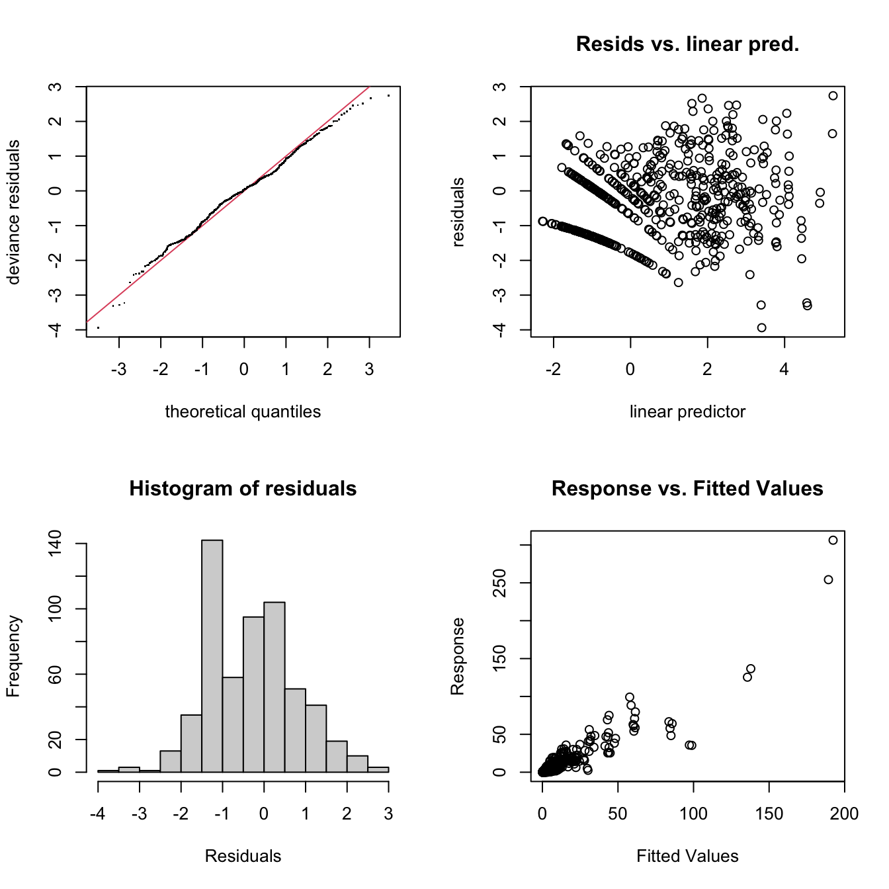
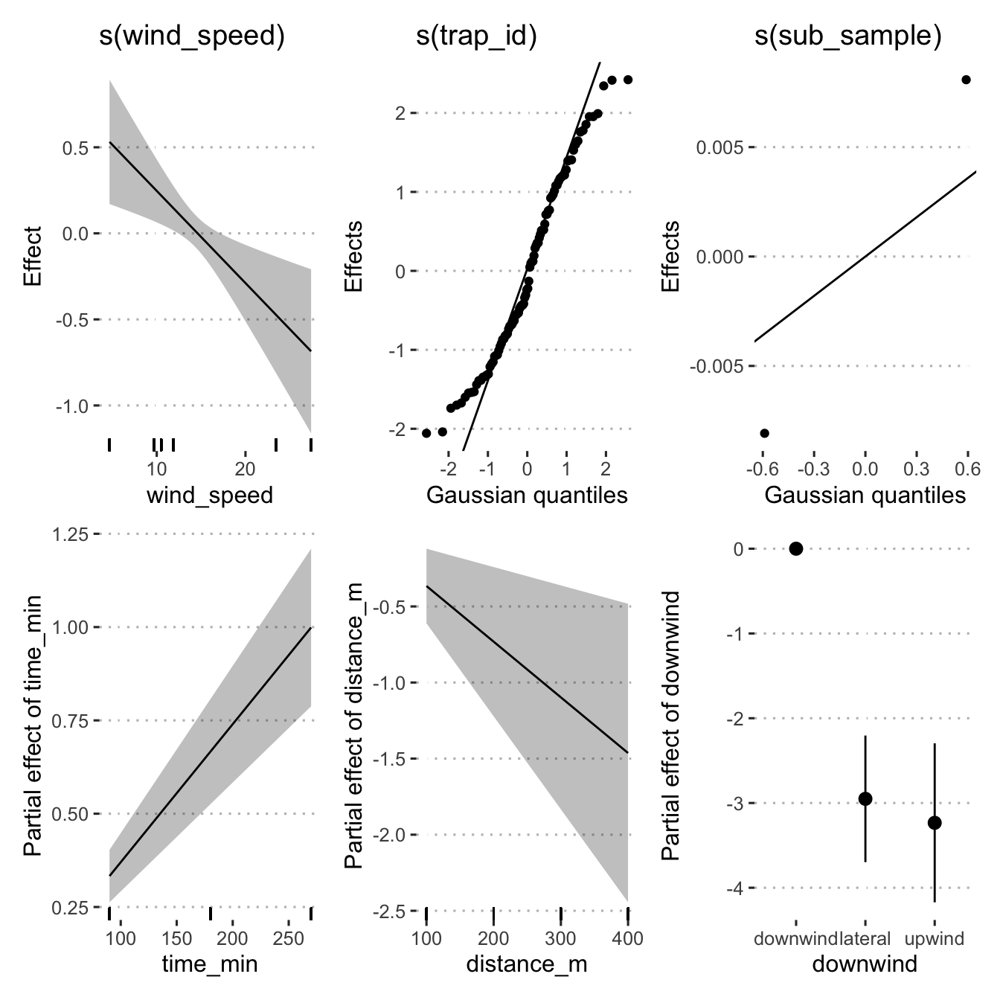

Fit models
Load libraries
library("tidyverse")
library("broom")
library("ggplot2")
library("ggpubr")
library("gratia")
library("here")
library("mgcv")
theme_set(theme_pubclean())Load data
load(here("data/dat.Rdata"))
load(here("data/mod_dat.Rdata"))
# add a factor col for the spore traps in each field respectively
mod_dat$trap_id <-
as.factor(paste0(mod_dat$field, mod_dat$trap_coord, mod_dat$distance_m))
mod_dat$sub_sample <- as.factor(mod_dat$sub_sample)Inspect the mod_dat object
mod_dat %>%
distinct(field, trap_coord, .keep_all = TRUE) %>%
select(trap_coord,
trap_degrees,
wind_dir,
wind_degrees,
degree_dif,
downwind,
trap_id) %>%
print(n = Inf)## # A tibble: 24 × 7
## trap_coord trap_degrees wind_dir wind_degrees degree_dif downwind trap_id
## <chr> <dbl> <chr> <dbl> <dbl> <fct> <fct>
## 1 E 90 NE 45 45 lateral 1E100
## 2 N 0 NE 45 45 lateral 1N100
## 3 S 180 NE 45 135 lateral 1S100
## 4 W 270 NE 45 225 lateral 1W100
## 5 E 90 S 180 90 lateral 2E100
## 6 N 0 S 180 180 downwind 2N100
## 7 S 180 S 180 0 upwind 2S100
## 8 W 270 S 180 90 lateral 2W100
## 9 NE 45 SE 135 90 lateral 3NE100
## 10 NW 315 SE 135 180 downwind 3NW100
## 11 SE 135 SE 135 0 upwind 3SE100
## 12 SW 225 SE 135 90 lateral 3SW100
## 13 E 90 NE 45 45 lateral 4E100
## 14 N 0 NE 45 45 lateral 4N100
## 15 S 180 NE 45 135 lateral 4S100
## 16 W 270 NE 45 225 lateral 4W100
## 17 NE 45 NE 45 0 upwind 5NE100
## 18 NW 315 NE 45 270 lateral 5NW100
## 19 SE 135 NE 45 90 lateral 5SE100
## 20 SW 225 NE 45 180 downwind 5SW100
## 21 E 90 N 0 90 lateral 6E100
## 22 N 0 N 0 0 upwind 6N100
## 23 S 180 N 0 180 downwind 6S100
## 24 W 270 N 0 270 lateral 6W100Because of the number of zeros in the data, we will use a Tweedie family for the models to help account for this, i.e. in the model functions you will see family = "tw" for this.
Model m1
- Response:
spore_cm2 - Linear predictors:
distance_m:time_min - Random effects:
field
m1 <- gam(
spore_cm2 ~ distance_m:time_min +
s(field, bs = "re"),
data = mod_dat,
method = "REML",
family = "tw"
)
m1##
## Family: Tweedie(p=1.711)
## Link function: log
##
## Formula:
## spore_cm2 ~ distance_m:time_min + s(field, bs = "re")
##
## Estimated degrees of freedom:
## 4.72 total = 6.72
##
## REML score: 1722.582Model m2
- Response:
spore_cm2 - Linear predictors:
distance_m:time_min - Smoothed predictors:
downwind - Random effects:
field
m2 <- gam(
spore_cm2 ~ distance_m:time_min +
s(field, bs = "re") +
s(downwind, bs = "re"),
method = "REML",
data = mod_dat,
family = "tw"
)
m2##
## Family: Tweedie(p=1.627)
## Link function: log
##
## Formula:
## spore_cm2 ~ distance_m:time_min + s(field, bs = "re") + s(downwind,
## bs = "re")
##
## Estimated degrees of freedom:
## 4.63 1.99 total = 8.62
##
## REML score: 1591.738Model m3
- Response:
spore_cm2 - Linear predictors:
distance_m:time_min - Random effects:
field,downwind,wind_speed
m3 <- gam(
spore_cm2 ~ distance_m:time_min +
s(wind_speed, bs = "re") +
s(field, bs = "re") +
s(downwind, bs = "re"),
method = "REML",
data = mod_dat,
family = "tw"
)
m3##
## Family: Tweedie(p=1.627)
## Link function: log
##
## Formula:
## spore_cm2 ~ distance_m:time_min + s(wind_speed, bs = "re") +
## s(field, bs = "re") + s(downwind, bs = "re")
##
## Estimated degrees of freedom:
## 0.00 4.63 1.99 total = 8.62
##
## REML score: 1591.738Model m4
- Response:
spore_cm2 - Linear predictors:
time_min,downwind,wind_speed - Smoothed predictors:
distance_m - Random effects:
field
m4 <- gam(
spore_cm2 ~ time_min + downwind + wind_speed +
s(distance_m, k = 3) +
s(field, bs = "re"),
method = "REML",
data = mod_dat,
family = "tw"
)
m4##
## Family: Tweedie(p=1.604)
## Link function: log
##
## Formula:
## spore_cm2 ~ time_min + downwind + wind_speed + s(distance_m,
## k = 3) + s(field, bs = "re")
##
## Estimated degrees of freedom:
## 1.00 3.46 total = 9.46
##
## REML score: 1549.849Model m5
- Response:
spore_cm2 - Linear predictors:
time_min,downwind,wind_speed - Smoothed predictors:
distance_m - Random effects:
field,time_min
m5 <- gam(
spore_cm2 ~ time_min + downwind + wind_speed +
s(distance_m, k = 3) +
s(time_min, bs = "re") +
s(field, bs = "re"),
method = "REML",
data = mod_dat,
family = "tw"
)
m5##
## Family: Tweedie(p=1.604)
## Link function: log
##
## Formula:
## spore_cm2 ~ time_min + downwind + wind_speed + s(distance_m,
## k = 3) + s(time_min, bs = "re") + s(field, bs = "re")
##
## Estimated degrees of freedom:
## 1.00 0.00 3.46 total = 9.46
##
## REML score: 1549.849Model m6
- Response:
spore_cm2 - Linear predictors:
time_min,downwind - Smoothed predictors:
distance_m - Random effects:
field
m6 <- gam(
spore_cm2 ~ time_min + downwind + s(distance_m, k = 3) +
s(field, bs = "re"),
method = "REML",
data = mod_dat,
family = "tw"
)
m6##
## Family: Tweedie(p=1.603)
## Link function: log
##
## Formula:
## spore_cm2 ~ time_min + downwind + s(distance_m, k = 3) + s(field,
## bs = "re")
##
## Estimated degrees of freedom:
## 1.00 4.59 total = 9.59
##
## REML score: 1548.587Model m7
- Response:
spore_cm2 - Linear predictors:
time_min,distance_m,downwind - Random effects:
field
m7 <- gam(
spore_cm2 ~ time_min + distance_m + downwind + s(field, bs = "re"),
method = "REML",
data = mod_dat,
family = "tw"
)
m7##
## Family: Tweedie(p=1.603)
## Link function: log
##
## Formula:
## spore_cm2 ~ time_min + distance_m + downwind + s(field, bs = "re")
##
## Estimated degrees of freedom:
## 4.59 total = 9.59
##
## REML score: 1553.303Model m8
- Response:
spore_cm2 - Linear predictors:
time_min,distance_m,downwind - Smoothed predictors:
wind_speed - Random effects:
field
m8 <- gam(
spore_cm2 ~ distance_m + downwind + time_min +
s(wind_speed, k = 6) +
s(field, bs = "re"),
method = "REML",
data = mod_dat,
family = "tw"
)
m8##
## Family: Tweedie(p=1.605)
## Link function: log
##
## Formula:
## spore_cm2 ~ distance_m + downwind + time_min + s(wind_speed,
## k = 6) + s(field, bs = "re")
##
## Estimated degrees of freedom:
## 1.64 2.77 total = 9.41
##
## REML score: 1552.389Model m9
- Response:
spore_cm2 - Linear predictors:
time_min,distance_m,downwind,smut_incidence - Smoothed predictors:
wind_speed - Random effects:
field
m9 <- gam(
spore_cm2 ~ distance_m + downwind + time_min + `smut_incidence` +
s(wind_speed, k = 6) +
s(field, bs = "re"),
method = "REML",
data = mod_dat,
family = "tw"
)
m9##
## Family: Tweedie(p=1.605)
## Link function: log
##
## Formula:
## spore_cm2 ~ distance_m + downwind + time_min + smut_incidence +
## s(wind_speed, k = 6) + s(field, bs = "re")
##
## Estimated degrees of freedom:
## 1.00 2.35 total = 9.35
##
## REML score: 1553.366Model m10
- Response:
spore_cm2 - Linear predictors:
time_min,distance_m,downwind,smut_incidence - Smoothed predictors:
wind_speed - Random effects:
trap_id,sub_sample
m10 <- gam(
spore_cm2 ~ time_min + distance_m + downwind +
s(wind_speed, k = 6, by = downwind) +
s(trap_id, sub_sample, bs = "re"),
method = "REML",
data = mod_dat,
family = "tw"
)
m10##
## Family: Tweedie(p=1.393)
## Link function: log
##
## Formula:
## spore_cm2 ~ time_min + distance_m + downwind + s(wind_speed,
## k = 6, by = downwind) + s(trap_id, sub_sample, bs = "re")
##
## Estimated degrees of freedom:
## 2.24 3.64 1.43 134.72 total = 147.03
##
## REML score: 1393.691Model m11
- Response:
spore_cm2 - Linear predictors:
time_min,distance_m,downwind,smut_incidence - Smoothed predictors:
wind_speed - Random effects:
trap_idandsub_samplegrouped bytrap_id
m11 <- gam(
spore_cm2 ~ time_min + distance_m + downwind +
s(wind_speed, k = 6) +
s(trap_id, bs = "re") +
s(sub_sample, by = trap_id, bs = "re"),
method = "REML",
data = mod_dat,
family = "tw"
)
m11##
## Family: Tweedie(p=1.381)
## Link function: log
##
## Formula:
## spore_cm2 ~ time_min + distance_m + downwind + s(wind_speed,
## k = 6) + s(trap_id, bs = "re") + s(sub_sample, by = trap_id,
## bs = "re")
##
## Estimated degrees of freedom:
## 1.0001 74.1731 0.9014 0.0002 1.6014 0.0000 0.0000
## 0.0000 1.6557 0.0000 0.0000 0.0000 0.0000 0.0000
## 0.0000 0.0000 0.0000 0.0000 0.0000 0.0000 0.0027
## 0.0000 0.0000 0.0000 0.0000 0.0000 1.2552 0.0000
## 0.0000 0.0000 1.4896 0.0000 0.0001 0.0000 0.0000
## 0.0000 0.0000 0.0000 0.0000 0.0000 0.0000 0.0000
## 0.1876 0.0000 1.5149 0.1474 0.0000 0.0000 0.0000
## 0.0000 1.6977 1.6097 0.0000 0.0000 0.0000 0.0000
## 0.0000 0.0000 0.0000 0.0000 0.0808 0.0000 0.0000
## 0.0000 0.0000 0.0000 0.0000 0.0000 0.1838 0.0000
## 0.7639 0.0001 1.5124 0.0000 0.0000 0.1483 0.0001
## 0.2474 0.0000 0.0001 0.0000 0.0155 0.0000 0.0000
## 0.9699 0.0000 0.0000 0.0000 0.0000 0.0001 0.0000
## 0.0000 0.5290 0.4666 0.0000 1.3752 0.0000 0.0000
## total = 98.53
##
## REML score: 1318.147Model m12
- Response:
spore_cm2 - Linear predictors:
time_min,distance_m,downwind,smut_incidence - Smoothed predictors:
wind_speed - Random effects:
trap_id,sub_sample
m12 <- gam(
spore_cm2 ~ time_min + distance_m + downwind +
s(wind_speed, k = 6) +
s(trap_id, bs = "re") +
s(sub_sample, bs = "re"),
method = "REML",
data = mod_dat,
family = "tw"
)
m12##
## Family: Tweedie(p=1.374)
## Link function: log
##
## Formula:
## spore_cm2 ~ time_min + distance_m + downwind + s(wind_speed,
## k = 6) + s(trap_id, bs = "re") + s(sub_sample, bs = "re")
##
## Estimated degrees of freedom:
## 1.001 80.881 0.247 total = 87.13
##
## REML score: 1322.293Model AIC
Check models for best fit using AIC.
models <- list(
m1 = m1,
m2 = m2,
m3 = m3,
m4 = m4,
m5 = m5,
m6 = m6,
m7 = m7,
m8 = m8,
m9 = m9,
m10 = m10,
m11 = m11,
m12 = m12
)
map_df(models, glance, .id = "model") %>%
arrange(AIC, BIC)## # A tibble: 12 × 8
## model df logLik AIC BIC deviance df.residual nobs
## <chr> <dbl> <dbl> <dbl> <dbl> <dbl> <dbl> <int>
## 1 m12 87.1 -1146. 2475. 2872. 715. 489. 576
## 2 m11 98.5 -1129. 2481. 2969. 670. 477. 576
## 3 m10 147. -1153. 2611. 3274. 714. 429. 576
## 4 m7 9.59 -1528. 3079. 3130. 2097. 566. 576
## 5 m6 9.59 -1528. 3079. 3131. 2097. 566. 576
## 6 m9 9.35 -1528. 3079. 3131. 2097. 567. 576
## 7 m4 9.46 -1528. 3079. 3131. 2097. 567. 576
## 8 m5 9.46 -1528. 3079. 3131. 2097. 567. 576
## 9 m8 9.41 -1528. 3079. 3131. 2097. 567. 576
## 10 m2 8.62 -1562. 3147. 3194. 2295. 567. 576
## 11 m3 8.62 -1562. 3147. 3194. 2295. 567. 576
## 12 m1 6.72 -1699. 3416. 3455. 3265. 569. 576Based on the AIC and BIC values, model m12 looks to be the best model for our data.
Inspect Model m12
Check model
gam.check(m12)
##
## Method: REML Optimizer: outer newton
## full convergence after 5 iterations.
## Gradient range [-8.526417e-05,5.676235e-05]
## (score 1322.293 & scale 1.3313).
## Hessian positive definite, eigenvalue range [3.634049e-05,460.3881].
## Model rank = 108 / 108
##
## Basis dimension (k) checking results. Low p-value (k-index<1) may
## indicate that k is too low, especially if edf is close to k'.
##
## k' edf k-index p-value
## s(wind_speed) 5.000 1.001 0.85 0.02 *
## s(trap_id) 96.000 80.881 NA NA
## s(sub_sample) 2.000 0.247 NA NA
## ---
## Signif. codes: 0 '***' 0.001 '**' 0.01 '*' 0.05 '.' 0.1 ' ' 1The model did fully converge after 5 iterations but wind speed is residuals are not randomly distributed. The diagnostic plots show some issues with the fit, indicating that we really need more data to fit a proper model if we were interested in fully predicting spore dispersal, but for our purposes, explaining the dispersal, this model is good enough. However, in the future, collecting more data so that k could be increased would be useful, but since this is the data that we have, this appears to be the best model that describes it.
Summarise model
summary(m12)##
## Family: Tweedie(p=1.374)
## Link function: log
##
## Formula:
## spore_cm2 ~ time_min + distance_m + downwind + s(wind_speed,
## k = 6) + s(trap_id, bs = "re") + s(sub_sample, bs = "re")
##
## Parametric coefficients:
## Estimate Std. Error t value Pr(>|t|)
## (Intercept) 3.4290693 0.4619755 7.423 5.13e-13 ***
## time_min 0.0036997 0.0003989 9.275 < 2e-16 ***
## distance_m -0.0036582 0.0012514 -2.923 0.00362 **
## downwindlateral -2.9509766 0.3809744 -7.746 5.52e-14 ***
## downwindupwind -3.2338553 0.4784438 -6.759 3.97e-11 ***
## ---
## Signif. codes: 0 '***' 0.001 '**' 0.01 '*' 0.05 '.' 0.1 ' ' 1
##
## Approximate significance of smooth terms:
## edf Ref.df F p-value
## s(wind_speed) 1.0007 1.001 8.534 0.00365 **
## s(trap_id) 80.8806 91.000 14.616 < 2e-16 ***
## s(sub_sample) 0.2468 1.000 0.315 0.25945
## ---
## Signif. codes: 0 '***' 0.001 '**' 0.01 '*' 0.05 '.' 0.1 ' ' 1
##
## R-sq.(adj) = 0.821 Deviance explained = 87.6%
## -REML = 1322.3 Scale est. = 1.3313 n = 576Visualise the model
draw(m12)
Predict spore dispersal
mod_dat %>% distinct(downwind) %>% pull()## [1] lateral downwind upwind
## Levels: downwind lateral upwindnewd <- expand_grid(
time_min = c(90, 180, 270),
downwind = c("downwind", "lateral", "upwind"),
distance_m = seq(0, 400, 100),
wind_speed = 0:30,
trap_id = as.factor(apply(expand.grid(
1, c("N", "S", "E", "W"), c(100, 200, 300, 400)
),
1, paste, collapse = "")),
sub_sample = as.factor(c(1, 2))
)
newd$pred_spore_cm2 <- predict(m12, newd)Visualise spore dispersal predictions
The GAM will predict spores to disperse at negative values, since this is not possible, we will set any values that are less than zero to zero in the model’s output before plotting.
newd %>%
mutate(pred_spore_cm2 = replace(pred_spore_cm2, pred_spore_cm2 < 0, 0)) %>%
ggplot(aes(x = distance_m, y = pred_spore_cm2, col = downwind)) +
geom_smooth(method = "gam", formula = y ~ s(x, k = 5), size = 1) +
scale_fill_viridis_d("Prevailing wind") +
scale_colour_viridis_d("Prevailing Wind") +
facet_grid(. ~ time_min) +
scale_x_continuous(sec.axis = sec_axis(
~ . ,
name = "Minutes since harvest beginning",
breaks = NULL,
labels = NULL
)) +
labs(x = "Distance from harvesting field (m)",
y = "Spores / m²") +
theme(
legend.position = "top",
legend.justification = "center",
legend.direction = "horizontal",
legend.background = element_blank(),
legend.key = element_blank()
) +
guides(fill = guide_legend(title.position = "top",
title.hjust = 0.5))
Predictions of spore dispersal (spores per meter squared) at 0m to 400m for three time points, 90 min, 180 min, 270 min after peanut harvest commenced.
ggsave(
last_plot(),
file = "plots/spore_prediction.png",
w = 5,
h = 2,
scale = 1.2
)